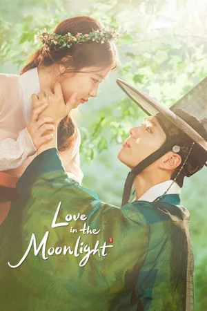

Ким Ю Джон
- Дата рождения: 22 сентября, 1999
- Знак зодиака: Дева
- Полных лет: 25 лет
- Место рождения: Сеул, Южная Корея
- Жанры: драма, мелодрама, комедия
- Всего фильмов: 50
Лучшие фильмы

Лунный свет, нарисованный облаками
Алые небеса

Мой демон
Девушка ХХ века
Продавец на полставки

Тайная дверь
Приберись получше
Солнце в обьятиях Луны
За взрослением Ким Корея следила в прямом эфире — Ю Чжон уже в детстве снималась в популярных проектах и даже получила прозвище Маленькая сестренка нации. Впервые в объективы камер девочка попала в 2003 году, когда снялась в рекламе печенья.

Молодая актриса сосредоточена на работе и саморазвитии. Неизвестно, были ли у девушки серьезные отношения, но у нее пока нет ни мужа, ни детей. Своим ребенком Ким Ю Чжон называет любимого кота.

Востребованная и популярная актриса по натуре домоседка и признается, что любым развлечениям предпочитает просмотр фильмов лежа на диване в обнимку с котом. Кореянка доброжелательна и открыта, хотя ее героини частенько высокомерны и напыщенны.
Фильмография
| Год | Русское название | Оригинальное название | Роль |
|---|---|---|---|
| 2023 | Мой демон | 마이 데몬 | То До-хи |
| 2022 | Девушка ХХ века | 20세기 소녀 | На Бо-ра |
| 2020 | Продавец на полставки | Backstreet Rookie | Сэт-бёль |
| 2018 | Приберись получше | Ildan tteugeopge cheongsohara | Гил О Соль |
| 2016 | Лунный свет, нарисованный облаками | 구르미 그린 달빛 | Хон Ра-он |